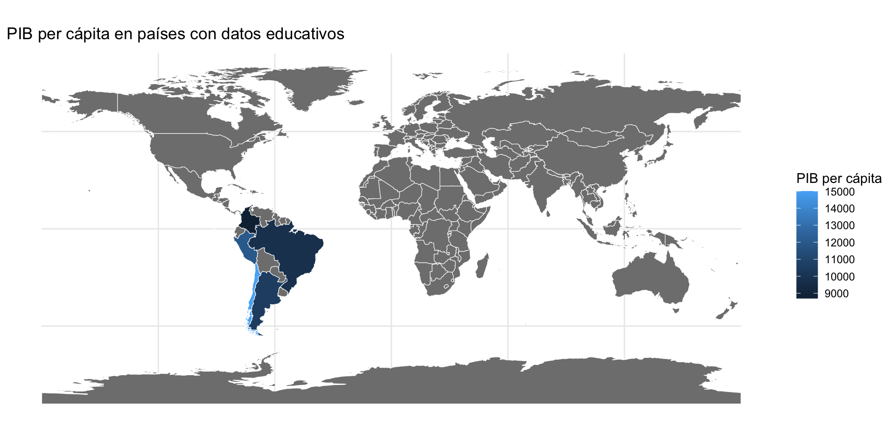

Sistema de Información Geográfica (SIG)
Creación y análisis de Mapas
May 22, 2025
Temario de hoy
- Introducción al SIG
- Paquetes en R
- Unión de bases de datos
- Práctica con datos ficticios
- ChileMapas
- Código práctico
Objetivo principal: Replicar estos mapas
Mapa mundial
Mapa Chile y regiones

Recapitulando
Sistema de Información Geográfica (SIG)
Paquetes: üì¶ ¬øQu√© es sf?
sf es un paquete de R para trabajar con datos espaciales (geográficos) de manera moderna y eficiente. Su nombre viene de “simple features”, un estándar internacional para representar datos espaciales (como puntos, líneas o polígonos) en bases de datos y software.
Te permite:
Leer y escribir archivos espaciales como Shapefiles, GeoJSON, KML, etc.
Unir datos geográficos con datos tabulares (como una comuna con su población).
Hacer análisis espacial (intersecciones, distancias, áreas, etc.).
Visualizar mapas fácilmente con
ggplot2::geom_sf()otmap.
Paquetes: üì¶ ¬øQu√© es sf?
üß© Tipos de geometr√≠a
POINT: una ubicación (ej: una escuela).LINESTRING: una línea (ej: un río).POLYGON: una superficie cerrada (ej: una comuna o país).MULTIPOLYGON: varios polígonos juntos (ej: Chile continental + Rapa Nui).
üîß Funciones importantes del paquete sf
st_read(): lee archivos espaciales (como shapefiles).st_write(): guarda archivos espaciales.st_geometry(): accede a la geometría de un objeto.st_crs(): inspecciona o define el sistema de coordenadas.st_transform(): cambia la proyección del mapa.st_join(),st_intersection(): operaciones espaciales.
Paquetes: üì¶ ¬øQu√© es sf?
üó∫Ô∏è ¬øPor qu√© es útil?
Porque te permite combinar el mundo de la estadística en R con el análisis geográfico, sin salir del mismo entorno.
| Componente | ¿Qué hace? |
|---|---|
| Clase especial | Le dice a R cómo interpretar los datos como espaciales. |
Columna geometry |
Guarda formas como puntos, polígonos, líneas. |
CRS (proyección) |
Define cómo se ubica esa geometría en el planeta. |
| Métodos especiales | Permite hacer joins, distancias, transformaciones, etc. |
Paquete: countrycode
El paquete countrycode permite convertir nombres de países entre distintos sistemas de codificación estándar. Es muy útil para unir bases de datos internacionales o conectar datos con geometrías espaciales.
[1] "ar5" "cctld" "continent"
[4] "country.name.de" "country.name.de.regex" "country.name.en"
[7] "country.name.en.regex" "country.name.fr" "country.name.fr.regex"
[10] "country.name.it" Algunas opciones de destination que puedes usar: *
“iso3c” → código de 3 letras (ej: CHL)
“iso2c” → código de 2 letras (ej: CL) * “continent” → continente (ej: Americas)
“region” → región del mundo según World Bank
“un.region.name” → región según Naciones Unidas
“cldr.short.en” → nombre corto en inglés (ej: Chile)
Paquete: countrycode
| atributo | valor |
|---|---|
| Nombre (original) | Chile |
| Código ISO-3 | CHL |
| Código ISO-2 | CL |
| Continente | Americas |
| Región | Latin America & Caribbean |
| Región ONU | Americas |
| Nombre corto en inglés | Chile |
Paquete: R Natural Earth.
Es un paquete R que permite descargar datos geográficos del mundo (países, estados, líneas costeras, ríos, etc.) desde el proyecto Natural Earth. Se usa mucho para crear mapas en R, especialmente con sf y ggplot2.
Simple feature collection with 2 features and 1 field
Geometry type: MULTIPOLYGON
Dimension: XY
Bounding box: xmin: 21.97891 ymin: -22.40205 xmax: 33.66152 ymax: -8.193652
Geodetic CRS: WGS 84
iso_a3 geometry
1 ZWE MULTIPOLYGON (((31.28789 -2...
2 ZMB MULTIPOLYGON (((30.39609 -1...Posee estadísticas de interés:
Producto de Interno de Bruto
Región económica (BRICS, OCDE, etc)
Espera de vida
Entonces….
| Paquete | Rol en el flujo de trabajo | Analogía |
|---|---|---|
sf |
Estructura: hace que todo sea “espacial” | Es como el “Excel” espacial de R |
rnaturalearth |
Fuente de datos geográficos en formato sf |
Es como bajar un mapa listo |
countrycode |
Diccionario para traducir nombres de países | Es como un traductor de nombres |
Manos a la obra
Exploremos
Simple feature collection with 1 feature and 1 field
Geometry type: MULTIPOLYGON
Dimension: XY
Bounding box: xmin: -109.4341 ymin: -55.8917 xmax: -66.43579 ymax: -17.50605
Geodetic CRS: WGS 84
adm0_a3 geometry
1 CHL MULTIPOLYGON (((-109.28 -27...library(countrycode)
# Vector de países (algunos con nombres en español)
paises <- c("Chile", "Argentina", "Brazil", "Estados Unidos", "Germany", "Reino Unido")
# Convertir a códigos ISO3
codigo_iso <- countrycode(paises,
origin = "country.name",
destination = "iso3c")
# Combinar en tabla
data.frame(pais = paises, iso3c = codigo_iso) pais iso3c
1 Chile CHL
2 Argentina ARG
3 Brazil BRA
4 Estados Unidos <NA>
5 Germany DEU
6 Reino Unido <NA>Pero ¿Qué nos falta? Indexación de bases de datos
Cuando trabajamos con datos espaciales, es fundamental asegurarnos de que las bases compartan un mismo sistema de referencia espacial (CRS). Además, debemos usar claves geográficas comunes (ej. códigos de región, comuna o distrito) para poder hacer joins entre bases tabulares y espaciales.
Verificación con st_crs(). Uniones con left_join() y inner_join() usando códigos comunes.
¿Coinciden los códigos geográficos? ¿Hay nombres de comunas mal escritos o duplicados? ¿Cuántos registros se pierden en el join?
Herramientas útiles:
anti_join()para ver qué quedó fuera.janitor::clean_names()para estandarizar nombres de variables (mayúsculas, tildes, etc.)
Datos ficticios (1)
library(dplyr)
library(knitr)
economia <- tibble(
pais = c("Chile", "Argentina", "Perú", "Brazil", "Colombia"),
pib_per_capita = c(15000, 10500, 12000, 9800, 8700)
)
educacion <- tibble(
pais = c("Chile", "Argentina", "Uruguay", "Brazil", "Ecuador"),
anios_educacion = c(11.2, 10.5, 9.8, 8.9, 8.3)
)Educación
| pais | anios_educacion |
|---|---|
| Chile | 11.2 |
| Argentina | 10.5 |
| Uruguay | 9.8 |
| Brazil | 8.9 |
| Ecuador | 8.3 |
Economía
| pais | pib_per_capita |
|---|---|
| Chile | 15000 |
| Argentina | 10500 |
| Perú | 12000 |
| Brazil | 9800 |
| Colombia | 8700 |
Datos ficticios (2)
Solo para los que se encuentran en el dataset: inner_join
# A tibble: 3 × 3
pais pib_per_capita anios_educacion
<chr> <dbl> <dbl>
1 Chile 15000 11.2
2 Argentina 10500 10.5
3 Brazil 9800 8.9Solo para los datos que se encuentran en el dataset desde la posición en el código (left) : left_join
# A tibble: 5 × 3
pais pib_per_capita anios_educacion
<chr> <dbl> <dbl>
1 Chile 15000 11.2
2 Argentina 10500 10.5
3 Perú 12000 NA
4 Brazil 9800 8.9
5 Colombia 8700 NA Solo para los datos que se encuentran en el dataset desde la posición en el código (right) : right_join
Datos ficticios (3)
Se unen todos, incluso los con valores NA (full): full_join
# A tibble: 7 × 3
pais pib_per_capita anios_educacion
<chr> <dbl> <dbl>
1 Chile 15000 11.2
2 Argentina 10500 10.5
3 Perú 12000 NA
4 Brazil 9800 8.9
5 Colombia 8700 NA
6 Uruguay NA 9.8
7 Ecuador NA 8.3Se verifica los que no pueden ser unidos correctamente en ambas bases: anti_join
# A tibble: 2 × 2
pais pib_per_capita
<chr> <dbl>
1 Perú 12000
2 Colombia 8700Datos ficticios (4)
# Paso 3: crear columna con código ISO-3 como 'iso3c'
datos <- datos %>%
mutate(iso3c = countrycode(pais, origin = "country.name", destination = "iso3c"))
# Paso 4: obtener geometría mundial
world <- ne_countries(scale = "medium", returnclass = "sf") %>%
select(name, iso_a3, geometry)
# Paso 5: unir usando world como base principal
datos_geo <- inner_join(world, datos, by = c("iso_a3" = "iso3c")); datos_geoSimple feature collection with 3 features and 5 fields
Geometry type: MULTIPOLYGON
Dimension: XY
Bounding box: xmin: -109.4341 ymin: -55.8917 xmax: -34.80547 ymax: 5.257959
Geodetic CRS: WGS 84
name iso_a3 pais pib_per_capita anios_educacion
1 Chile CHL Chile 15000 11.2
2 Brazil BRA Brazil 9800 8.9
3 Argentina ARG Argentina 10500 10.5
geometry
1 MULTIPOLYGON (((-109.28 -27...
2 MULTIPOLYGON (((-66.87603 1...
3 MULTIPOLYGON (((-57.60889 -...Datos ficticios (5)
Rows: 7
Columns: 4
$ pais <chr> "Chile", "Argentina", "Perú", "Brazil", "Colombia", "U…
$ pib_per_capita <dbl> 15000, 10500, 12000, 9800, 8700, NA, NA
$ anios_educacion <dbl> 11.2, 10.5, NA, 8.9, NA, 9.8, 8.3
$ iso3c <chr> "CHL", "ARG", NA, "BRA", "COL", "URY", "ECU"Rows: 242
Columns: 3
$ name <chr> "Zimbabwe", "Zambia", "Yemen", "Vietnam", "Venezuela", "Vatic…
$ iso_a3 <chr> "ZWE", "ZMB", "YEM", "VNM", "VEN", "VAT", "VUT", "UZB", "URY"…
$ geometry <MULTIPOLYGON [°]> MULTIPOLYGON (((31.28789 -2..., MULTIPOLYGON (((…| name | iso3c | pais | pib_per_capita | anios_educacion | geometry |
|---|---|---|---|---|---|
| Uruguay | URY | Uruguay | NA | 9.8 | MULTIPOLYGON (((-53.37061 -... |
| Ecuador | ECU | Ecuador | NA | 8.3 | MULTIPOLYGON (((-75.28447 -... |
| Colombia | COL | Colombia | 8700 | NA | MULTIPOLYGON (((-71.31973 1... |
| Chile | CHL | Chile | 15000 | 11.2 | MULTIPOLYGON (((-109.28 -27... |
| Brazil | BRA | Brazil | 9800 | 8.9 | MULTIPOLYGON (((-66.87603 1... |
| Argentina | ARG | Argentina | 10500 | 10.5 | MULTIPOLYGON (((-57.60889 -... |
Datos ficticios (6)
✅ geom_sf(aes(fill = pib_per_capita), color = "white")
geom_sf()es el equivalente espacial degeom_bar()ogeom_point(), pero para geometría.fill = pib_per_capita: el color del país depende del valor del PIB per cápita.color = "white": agrega bordes blancos entre países, para que se vean claramente separados.
Datos ficticios (7)
Rows: 7
Columns: 4
$ pais <chr> "Chile", "Argentina", "Perú", "Brazil", "Colombia", "U…
$ pib_per_capita <dbl> 15000, 10500, 12000, 9800, 8700, NA, NA
$ anios_educacion <dbl> 11.2, 10.5, NA, 8.9, NA, 9.8, 8.3
$ iso3c <chr> "CHL", "ARG", NA, "BRA", "COL", "URY", "ECU"Rows: 242
Columns: 3
$ name <chr> "Zimbabwe", "Zambia", "Yemen", "Vietnam", "Venezuela", "Vatic…
$ iso_a3 <chr> "ZWE", "ZMB", "YEM", "VNM", "VEN", "VAT", "VUT", "UZB", "URY"…
$ geometry <MULTIPOLYGON [°]> MULTIPOLYGON (((31.28789 -2..., MULTIPOLYGON (((…| name | iso3c | pais | pib_per_capita | anios_educacion | geometry |
|---|---|---|---|---|---|
| Zimbabwe | ZWE | NA | NA | NA | MULTIPOLYGON (((31.28789 -2... |
| Zambia | ZMB | NA | NA | NA | MULTIPOLYGON (((30.39609 -1... |
| Yemen | YEM | NA | NA | NA | MULTIPOLYGON (((53.08564 16... |
| Vietnam | VNM | NA | NA | NA | MULTIPOLYGON (((104.064 10.... |
| Venezuela | VEN | NA | NA | NA | MULTIPOLYGON (((-60.82119 9... |
Datos ficticios 8
Hasta acá: DUDAS.
Chile Mapas
El paquete
chilemapases una herramienta diseñada específicamente para R que permite acceder fácilmente a mapas oficiales y actualizados de Chile, listos para usar conggplot2ysf.Proporción información de: Provincias, Comunas, Regiones y Distrito electorales
ChileMapas
# A tibble: 10 × 4
codigo_comuna codigo_provincia codigo_region geometry
<chr> <chr> <chr> <MULTIPOLYGON [°]>
1 01401 014 01 (((-68.86081 -21.28512, -68.921…
2 01403 014 01 (((-68.65113 -19.77188, -68.811…
3 01405 014 01 (((-68.65113 -19.77188, -68.635…
4 01402 014 01 (((-69.31789 -19.13651, -69.271…
5 01404 014 01 (((-69.39615 -19.06125, -69.400…
6 01107 011 01 (((-70.1095 -20.35131, -70.1243…
7 01101 011 01 (((-70.09894 -20.08504, -70.102…
8 02104 021 02 (((-68.98863 -25.38016, -68.987…
9 02101 021 02 (((-70.60654 -23.43054, -70.601…
10 02201 022 02 (((-67.94302 -22.38175, -67.955…Gráfico Chile
Chile Mapas: Regiones
El paquete {sf} facilita en gran medida el trabajo con datos geográficos, especialmente en lo que respecta a operaciones espaciales como la fusión de polígonos adyacentes.
En este caso, utilizamos group_by() para agrupar las observaciones según la variable codigo_region, Luego, aplicamos summarize() junto a la función sf::st_union() para combinar los polígonos de las comunas dentro de cada grupo, generando así un nuevo conjunto de polígonos regionales
mapa_regiones <- mapa_comunas |>
group_by(codigo_region) |>
summarize(geometry = st_union(geometry)) # resumir los datos agrupados uniéndolos
mapa_regiones |> head(2)# A tibble: 2 × 2
codigo_region geometry
<chr> <GEOMETRY [°]>
1 01 POLYGON ((-69.93023 -21.4246, -69.92376 -21.42622, -69.91932 -2…
2 02 MULTIPOLYGON (((-68.0676 -24.32856, -67.91698 -24.26902, -67.80…ChileMapas: Regiones
ChileMapas: Filtremos
mapa <- chilemapas::mapa_comunas |>
left_join(
chilemapas::codigos_territoriales |>
select(matches("comuna")),
by = "codigo_comuna") |>
filter(codigo_region=="08")
mapa |> head(2)# A tibble: 2 × 5
codigo_comuna codigo_provincia codigo_region geometry
<chr> <chr> <chr> <MULTIPOLYGON [°]>
1 08308 083 08 (((-71.67889 -37.80871, -71.6746…
2 08314 083 08 (((-71.20222 -37.65613, -71.1991…
# ℹ 1 more variable: nombre_comuna <chr>mapa_datos <- mapa |>
# crear una variable para comunas específicas
mutate(variable = case_when(nombre_comuna == "Chiguayante" ~ "Fui",
nombre_comuna == "San Pedro de la Paz" ~ "Fui",
nombre_comuna == "Coronel" ~ "Fui",
nombre_comuna == "Hualpen" ~ "No fui",
nombre_comuna == "Lota" ~ "Fui",
nombre_comuna == "Concepcion" ~ "Ñuñoa",
nombre_comuna == "Santa Juana" ~ "No fui")) |>
select(nombre_comuna, codigo_comuna, variable, geometry)
mapa_datos |> head(1)# A tibble: 1 × 4
nombre_comuna codigo_comuna variable geometry
<chr> <chr> <chr> <MULTIPOLYGON [°]>
1 Quilaco 08308 <NA> (((-71.67889 -37.80871, -71.67466 -37.81…ChileMapas: Visualizar

Fuente utilizadas

Sesión 3: InteRculturales